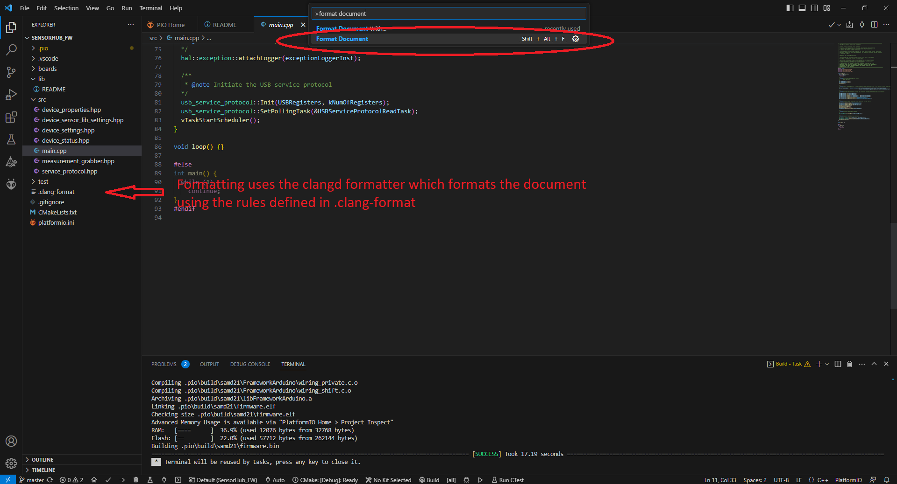

Building and Flashing
This guide will guide you through the steps needed to get the tests and firmware compiled. The prerequisites for the development environment are:
-
PlatformIO compatible IDE (VSCode is recommended) with the PlatformIO plugin installed
-
Modern version of Python 3.x
-
Modern version of CMake and an C/C++ compiler (favoriably MSVC (under Windows) or GCC (Linux and Mac OS))
-
Preferably a VT100 compatible terminal emulator (Putty is recommended)
-
Local copy of this git repository (git clone)
Install an c/c++ compiler
This is needed for compiling the unit-tests and configuring some parts of the build-system.
Installation
Step 1: Download the VS Buildtools installer and launch the installer.
Step 2: Accept the EULA and continue:
If done correctly this screen should show up.. Wait for the download to finish :)

Step 3: Select the following options and click on the install button:

C++ Clang tools for Windows
Clang has tools for static code analysis and code formatting (besides being an compiler frontend (llvm)).
Which might be very useful when trying to write consistent code following code rules.
Step 4: Wait for the installation to finish :w
Done, your setup is now ready :)
The fastest way to install the compiler and required tools in linux is by using the terminal.
Step 1: Open a terminal and enter:
sudo apt-get install gcc cmake
Done, your setup is now ready :)
The fastest way to install the compiler and required tools in linux is by using the terminal.
Step 1: Open a terminal and enter:
sudo pacman -S gcc cmake
In Mac os the same principle applies as would to linux. The fastest way is using HomeBrew in the terminal.
Step 1:
brew install gcc cmake
Done, your setup is now ready :)
Setup VSCode
This section is dedicated to describing the steps needed to setup the VSCode editor to support our development environment. The following plugins will have to be installed:
-
C/C++
-
CMake
-
CMake Tools
-
PlatformIO IDE
Step 1: Open VS Code and head to the extensions tab (4th icon in the left sidebar).
Step 2: Search and install the following plugins:
Plugin C/C++
Search for the plugin in the search bar: C/C++ from publisher: ms-vscode or Microsoft. Click on install...

Plugins CMake and CMake Tools
Search for the plugin in the search bar: CMake. Install the plugins CMake and CMake Tools from publisher: twxs and Microsoft. And Click on install...
Plugin PlatformIO IDE
Search for the plugin in the search bar: PlatformIO IDE from publisher: PlatformIO. Click on install...

Congratulations🎉 VS code is now set-up!
Building Projects (SensorHub_FW and ActuatorHub_FW)
Step 1: Open the SensorHub_FW or ActuatorHub_FW project folder in vs code
Open VS code and select File->Open Folder.
Open the SensorHub_FW or ActuatorHub_FW folder.

Step 2: Configure CMake
VS code will ask automatically to configure the project using CMake.

Select the right compiler from the list: When asked to always configure projects upon opening. Select No!
Step 3: Build the project using PlatformIO
Select the build icon in the bottom left toolbar in VS code. After some time passes you will get this output...

Congratulations🎉 You succesfully built the mcu binary
Formatter and unit-tests
Advanced features like the auto-formatter and unit tests are very useful and help keeping code quality consistent.
How to use the auto-formatter
Step 1: Press CTRL+SHIFT+P and type "format document" 
This uses the rules defined in the .clang-format file
How to use the unit testing features in vs code
Note
The red icon is the flash icon, when a board is connected via micro-usb the mcu binary will be flashed to the MCU.
The purple icon is the clean icon, when pressed all build files will be deleted.
The green icon is the build icon for the unit tests, when pressed the unit-tests will be build using CMake.
The orange icon is the CTest icon, when pressed the unit tests will be run.
Step 1: Click on the Build icon for the unit tests (Gear icon with the text "Build").
Step 2: Click on the Run CTest button.